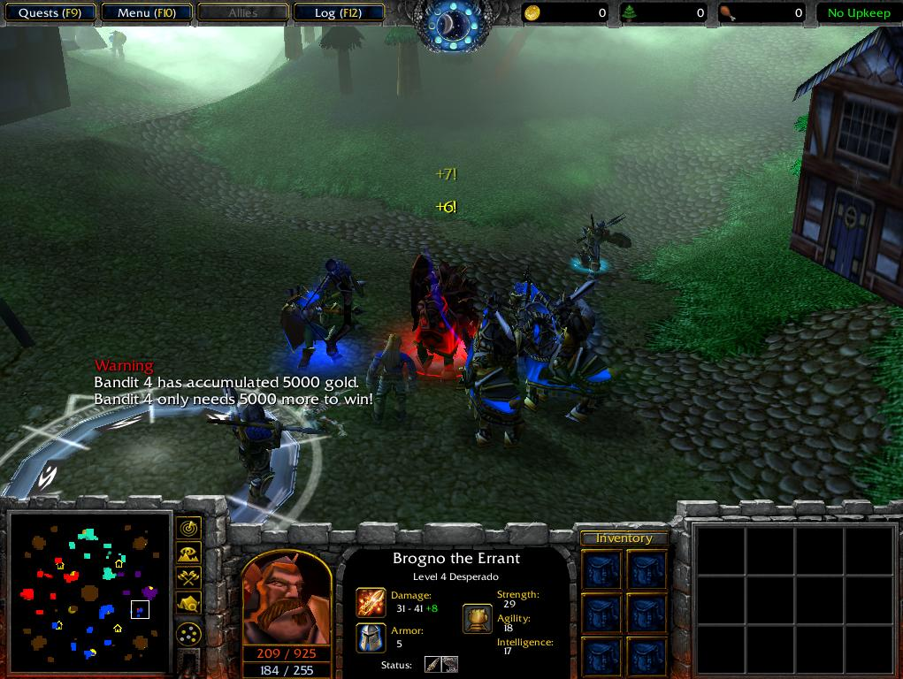

Among the heroes you can hire is the Desperado, an errant warrior who can terrorize remote villages. A lone wolf by nature, the Desperado fights most vigorously in isolation. Here, he takes on a cadre of troops by himself.
Previous
|
Next